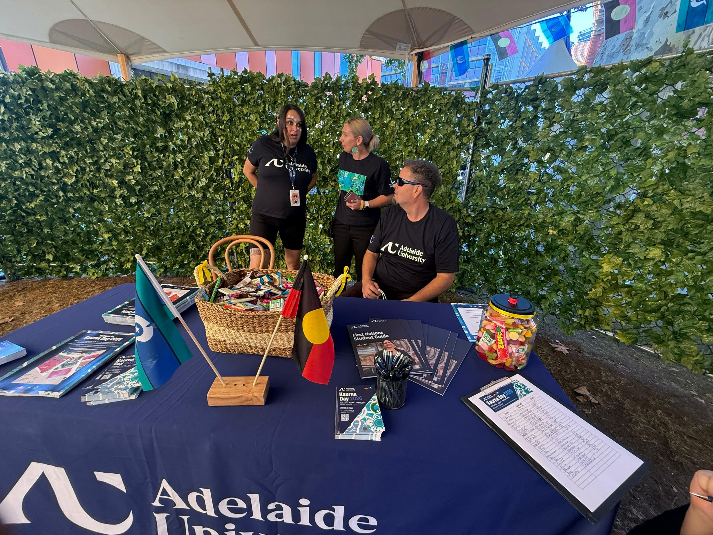
2 photosEmployability Profile • Semester 1 2026
Ajay Ramesh
Bachelor of Computer Science
This is a portfolio documenting my journey from technical confidence to professional confidence through networking, cultural intelligence, career development and industry engagement.
12Activities
7In Person
5Online
AICareer Pathway
Part 1.1
Current Employability
Before these activities, I already had technical strengths, but I wanted to build professional confidence, networking skills and awareness of the Australian employment market.
As a final-year Bachelor of Computer Science student majoring in Artificial Intelligence, I recognise that technical knowledge alone is not enough to achieve success in today's professional environment. Throughout my degree, I have developed strong technical skills in programming, artificial intelligence, machine learning, problem-solving, and analytical thinking through coursework, projects, and independent learning. While I am confident in my technical abilities, I understand that employers also value communication, teamwork, networking, adaptability, and professional awareness. For this reason, I viewed this employability program as an opportunity to further develop the skills required to successfully transition from university into graduate employment.
One of the key areas I wanted to focus on was professional communication and networking. I consider myself a naturally introverted person and although I am comfortable communicating in English, I sometimes find it difficult to initiate conversations or express my thoughts confidently when speaking with unfamiliar people. As a result, I recognised that networking and professional interaction were areas where I could improve. Rather than avoiding these situations, I deliberately chose to attend networking workshops, industry showcases, and career development events that would encourage me to step outside my comfort zone and engage with professionals, presenters, and other students.
Another area I wanted to develop was my understanding of the Australian employment market. As an international student approaching graduation, I wanted to learn more about employer expectations, recruitment processes, graduate opportunities, and job application strategies. While my degree has provided me with valuable technical knowledge, I felt it was important to gain a better understanding of how employers assess candidates and what skills are required to remain competitive in the workforce. Workshops focused on resumes, cover letters, interviews, LinkedIn, and job-search strategies provided opportunities to strengthen these areas and prepare me for future employment.
I also wanted to improve my cultural awareness and ability to work effectively within diverse environments. The technology industry is increasingly global and collaborative, requiring professionals to communicate and work alongside people from different cultural, educational, and professional backgrounds. Developing cultural intelligence, adaptability, and interpersonal skills will be important throughout my future career, particularly within technology and artificial intelligence fields where international collaboration is common.
At the beginning of this process, I believed I possessed many of the technical skills required for employment but recognised that I needed to further develop my professional confidence, networking abilities, communication skills, and understanding of career pathways. Through active participation in employability and industry engagement activities, I aimed to become more prepared for graduate employment, expand my professional network, and gain greater confidence when interacting in professional settings.
Ultimately, my goal was to become a well-rounded professional who combines strong technical expertise with the employability skills necessary to thrive in a modern and diverse workplace. By participating in these activities, I hoped to strengthen both my professional readiness and personal confidence while preparing for the transition from university to a successful career in the technology industry.
Portfolio Story
Before → After
Before
- Technically confident but professionally reserved
- Networking felt uncomfortable
- Limited awareness of graduate recruitment pathways
- Unsure how to present skills to employers
After
- More willing to speak with professionals
- Clearer job-search and application strategy
- Better understanding of diverse workplaces
- Improved confidence for graduate employment
Part 1
Activities
Click any activity photo or heading to view the evidence photos and full activity summary in one place.
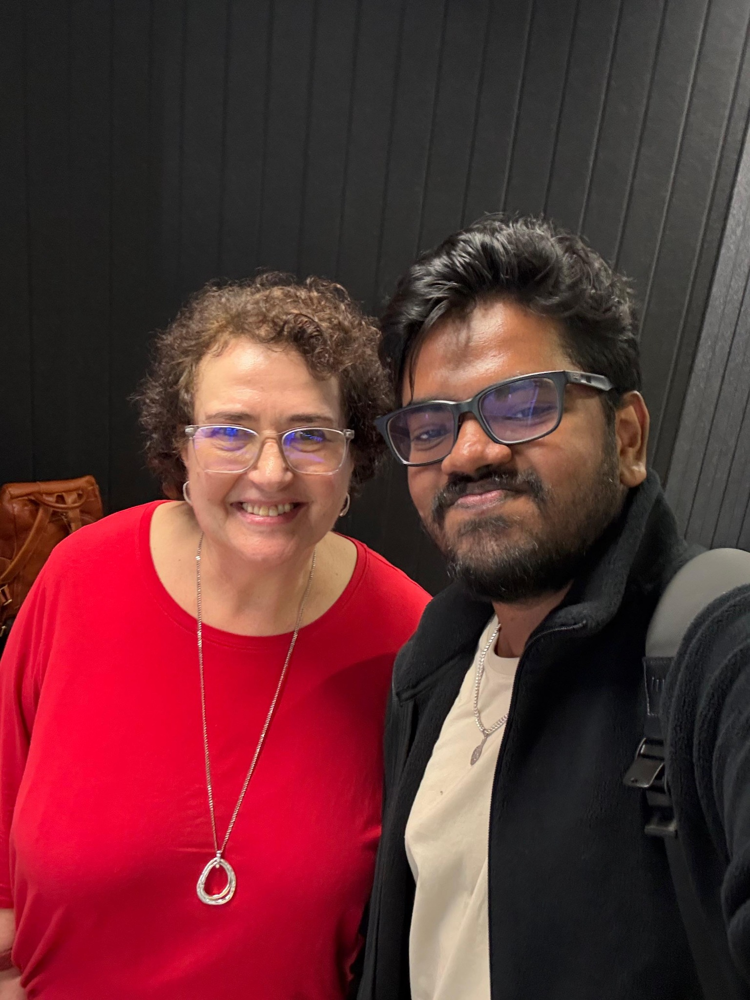
1 photo02Boost Your Job Prospects with Cultural Intelligence (CQ)
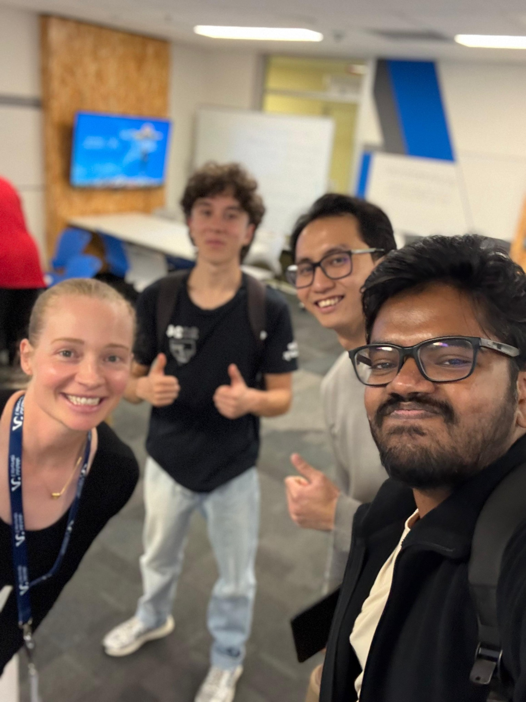
1 photo03How to Network Effectively
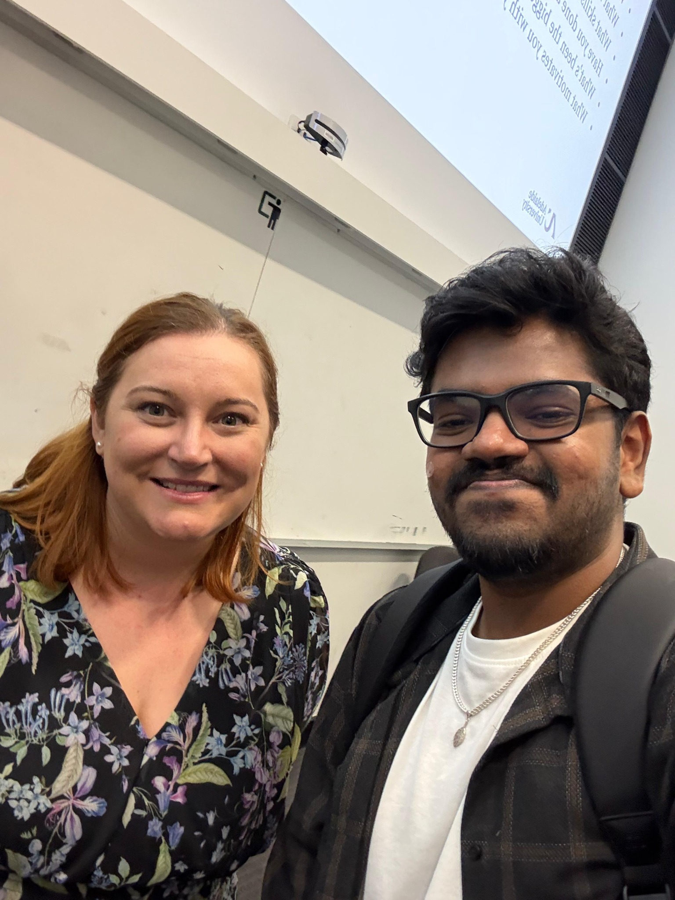
1 photo04International Careers Development Program: S1 Networking Skills Workshop for International Students
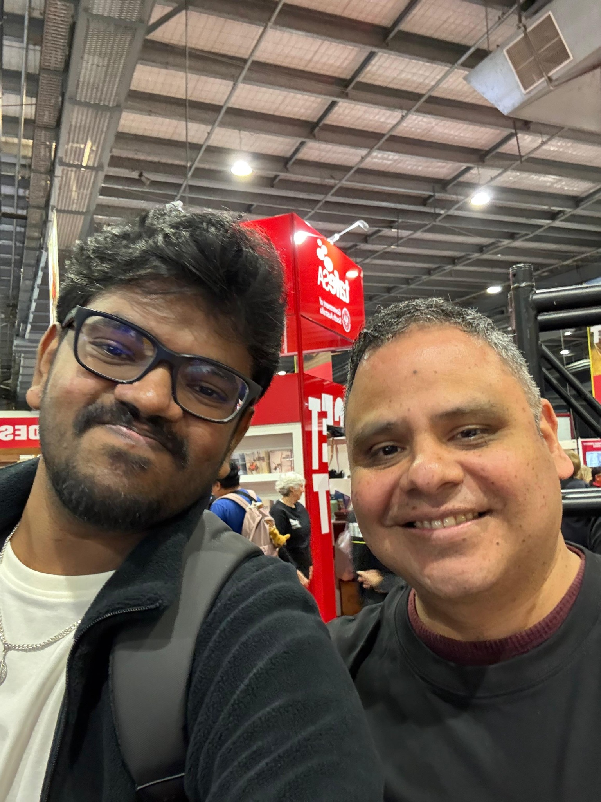
2 photos05Defence and Space Industry Careers Showcase
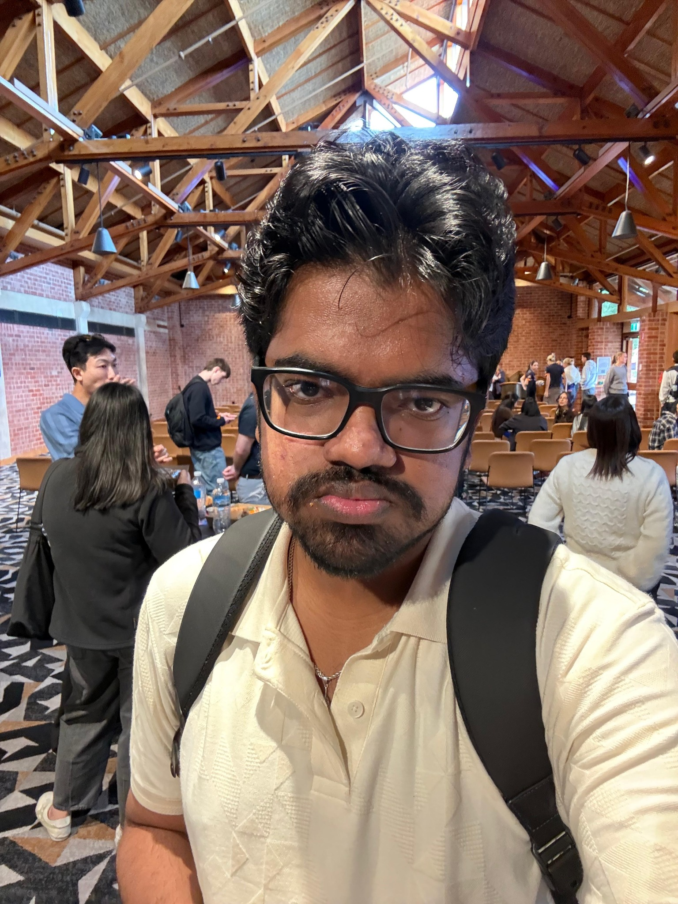
2 photos06Game Changers: Careers in Sports, Events and Tourism
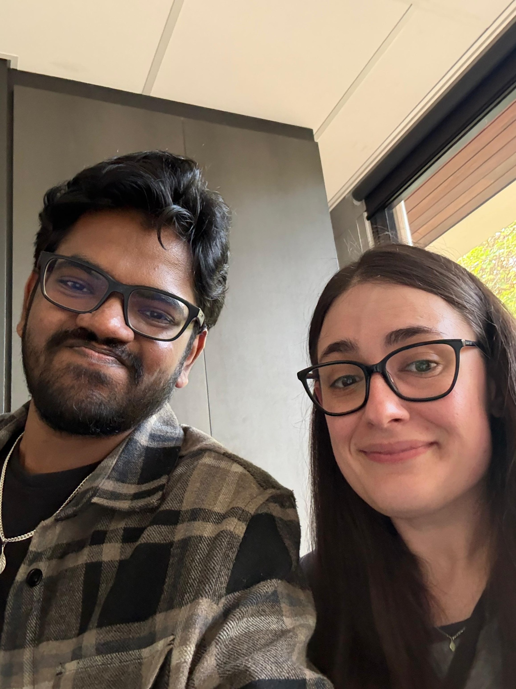
1 photo07Tech It Easy: Your Next Chapter – New Ways of Searching for Jobs
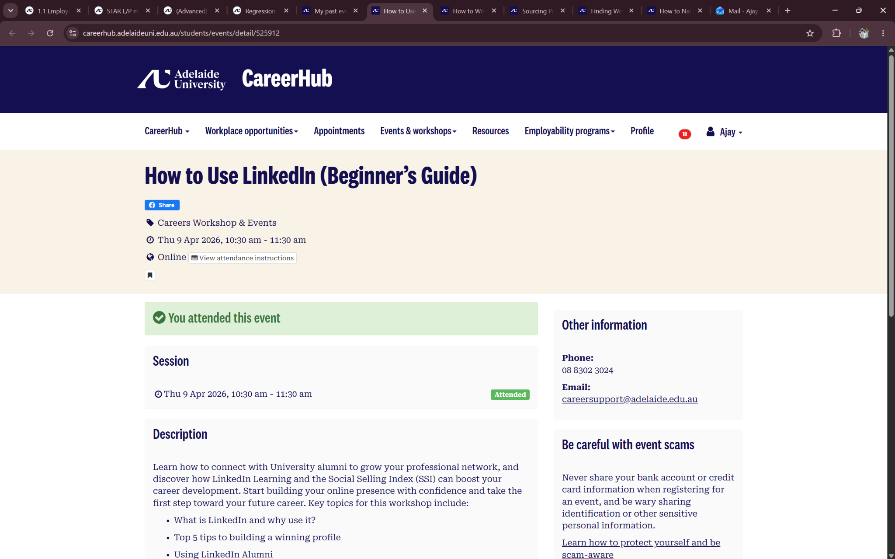
1 photo08How to Use LinkedIn (Beginner’s Guide)
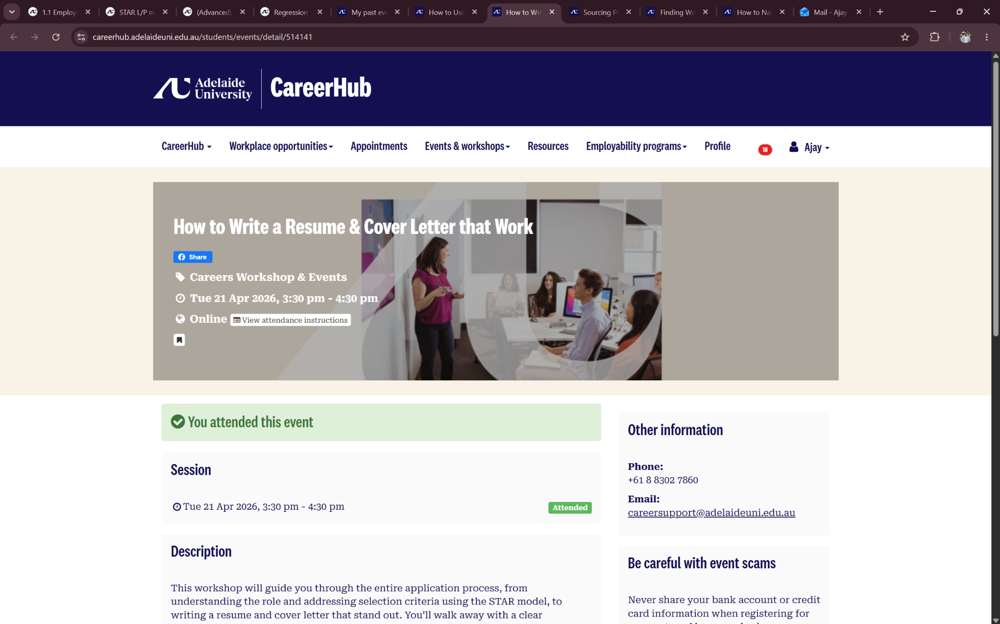
1 photo09How to Write a Resume & Cover Letter that Work
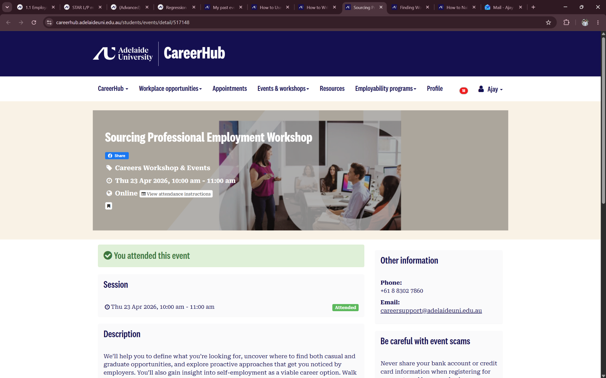
1 photo10Sourcing Professional Employment Workshop
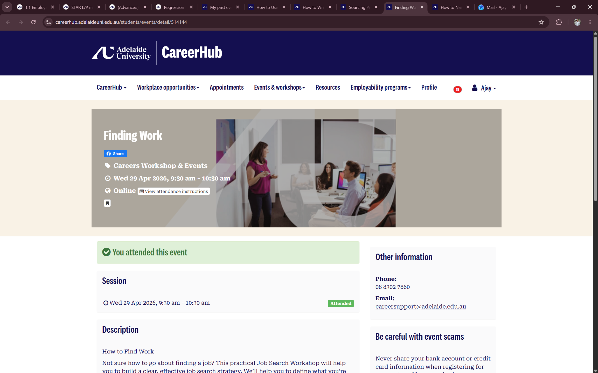
1 photo11Finding Work
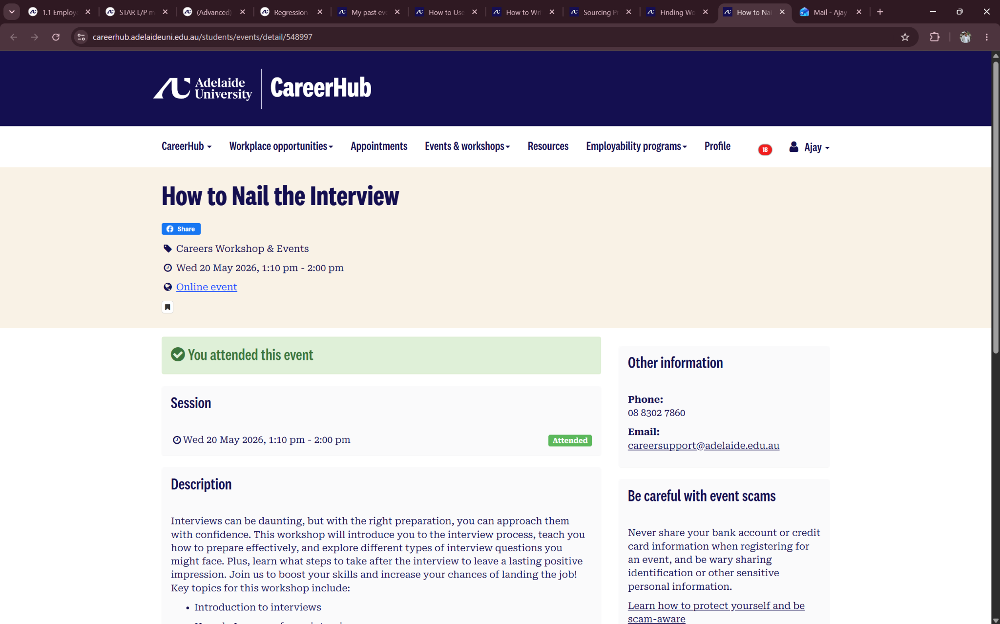
1 photo12How to Nail the Interview
Part 2
Post Employability Profile
S
Situation
What was happening? What was the context?
T
Task
What did I need to do or improve?
A
Action
What actions did I take?
R
Result / Reflect
What changed and how did I respond?
L/P
Learning / Planning
What did I learn and how will I apply it?
Introduction
At the start of Semester 1, I thought of employability mainly in terms of technical skills. As a final-year Bachelor of Computer Science student majoring in Artificial Intelligence, I felt confident in my programming, problem-solving, and analytical abilities. However, I also understood that finding a job after graduation would require more than just technical knowledge.
I wanted to work on my confidence when meeting new people. I tend to be introverted and usually keep to myself in unfamiliar situations. Though I am comfortable speaking English, I sometimes find it hard to organize my thoughts quickly during conversations, especially when chatting with strangers. Because of this, networking events and professional conversations often felt daunting to me.
Initially, when I reviewed the employability activities available throughout the semester, I leaned toward the easier options that involved less interaction. However, I realized that shying away from uncomfortable situations wouldn’t help me grow. Instead, I made a point to choose workshops, networking sessions, and industry events that would push me out of my comfort zone. Looking back, the experiences that impacted me the most were the International Careers Development Program Networking Skills Workshop, the Defence and Space Industry Careers Showcase, and the Cultural Intelligence workshop.
Experience 1: International Careers Development Program - S1 Networking Skills Workshop
Situation
As graduation approached, I became more aware of how important networking is for finding internships, graduate roles, and industry opportunities. Although I understood this theoretically, I seldom put myself in situations that required me to network actively. I often worried about not knowing what to say or running out of things to discuss, which led me to avoid these situations.
Task
My goal was to become more comfortable interacting with new faces and to learn practical networking skills for professional settings. I aimed to challenge myself to engage rather than just sit back and watch.
Action
I attended the networking workshop and made a conscious effort to participate in the activities instead of staying silent. During the session, I practiced introducing myself, making small talk, and talking with other students. I also chatted with the facilitator after the workshop, which is something I would normally avoid. While these interactions might seem simple, they pushed me outside my comfort zone.
Result / Reflection
At first, I felt uneasy and a bit anxious. I was overthinking what I wanted to say and worrying about how others perceived me. However, as the session went on, I noticed that most people felt a similar sense of uncertainty. The workshop taught me that networking is not about impressing others or asking for jobs. It’s about making genuine connections and having meaningful conversations. This shifted my view on networking and made it feel much less intimidating.
Learning / Planning
The biggest lesson I learned was that networking is a skill that gets better with practice. Confidence doesn’t happen overnight; it grows through repeated exposure to situations that initially feel uncomfortable. Moving forward, I plan to keep attending networking events and to use LinkedIn more actively to maintain professional connections. While I still have a naturally introverted side, I now feel more ready to put myself in situations that aid my professional growth.
Experience 2: Defence and Space Industry Careers Showcase
Situation
As a student in Computer Science and Artificial Intelligence, I have always been curious about how technology is used in real industries. The Defence and Space Industry Careers Showcase gave me a chance to learn about one of South Australia's fastest-growing sectors and explore potential career paths.
Task
My aim was to talk with industry representatives, discover available job opportunities, and understand how my technical skills could fit into defence, cybersecurity, and space-related fields.
Action
During the event, I visited several exhibitor booths and chatted with various industry representatives. I asked questions about career paths, graduate openings, and the skills employers seek when hiring graduates. I also checked out demonstrations related to cybersecurity and emerging technologies, which intrigued me given my tech background.
Result / Reflection
One of the most memorable parts of the event was learning about citizenship requirements for many defence-related roles. As an international student, this realization was initially disheartening because it pointed out limitations I hadn’t fully considered before attending the showcase. For a brief time, I felt discouraged since some of the opportunities I found most appealing were not readily available to me. However, after discussing with industry representatives, I started to view the situation differently. They explained that many skills gained through Computer Science and Artificial Intelligence are transferable and valued in many industries. This helped me see that career development is rarely straightforward and that being adaptable is very important.
Learning / Planning
This experience showed me the value of focusing on developing strong, transferable skills instead of getting stuck on a single industry or career path. It also reminded me that challenges and limitations don’t necessarily close doors; they often encourage people to seek out different opportunities. Going forward, I plan to keep developing my technical skills while staying open-minded about where those skills could take me.
Experience 3: Boost your Job Prospects with Cultural Intelligence (CQ)
Situation
Today’s workplaces are becoming more diverse, especially in the technology sector, where teams often include people from various cultural, educational, and professional backgrounds. Before attending this workshop, I recognized the importance of diversity but hadn’t thought deeply about Cultural Intelligence as a professional skill.
Task
My goal was to better understand how cultural differences affect workplace interactions and to learn how I could be a more effective team member in diverse environments.
Action
During the workshop, I engaged in discussions about workplace diversity, communication styles, inclusion, and collaboration. I reflected on my experiences working with people from different backgrounds and considered how assumptions and communication styles can impact professional relationships.
Result / Reflection
The workshop encouraged me to think beyond technical skills and consider the human side of professional environments. One key takeaway was that effective communication is not just about speaking clearly; it’s also about understanding different perspectives. I realized that people may approach problems, teamwork, and communication in different ways based on their history and experiences. This was something I had encountered before but had never consciously thought about.
Learning / Planning
I learned that Cultural Intelligence is a valuable skill for employability because it helps people work well in diverse teams. As someone hoping to enter the technology industry, I recognize that collaboration will be a big part of my future career. Moving ahead, I want to keep improving my cultural awareness and stay open to learning from those with different experiences than mine.
Overall Reflection
Looking back on Semester 1, I notice real growth in both my personal and professional development. Before engaging in these activities, I mainly focused on building technical skills and thought employability was mostly about qualifications and knowledge. While these aspects remain important, I now have a broader understanding of what employer’s value.
The most significant change has been my attitude towards networking and professional engagement. As an introvert, I used to shy away from situations requiring me to interact with unfamiliar faces. Although I still find some networking scenarios challenging, I am now much more willing to participate than at the semester’s start. Repeated exposure to workshops, industry events, and professional conversations helped me realize that confidence grows through experience, not perfection.
These activities also improved my understanding of the Australian job market, workplace diversity, and the significance of transferable skills. Most importantly, they helped me acknowledge that professional development is an ongoing journey. I now feel better prepared for graduate employment and more confident in my ability to interact with industry professionals, adjust to new environments, and keep learning throughout my career.
While I still have areas to improve, especially concerning confidence and networking, I can clearly see the progress I’ve made over the semester. Overall, these experiences have helped me become not just a stronger future professional but also a more confident person.
Future Plan
Graduate Ready Direction
I will continue developing technical expertise in Artificial Intelligence while strengthening communication, networking and cultural intelligence. My goal is to become a well-rounded graduate who can contribute confidently within diverse technology teams.